Abstract
We address the problem of efficiently organizing search over very large trees, which arises in many applications such as autonomous driving, aerial vehicles, and so on; here, we are motivated by high speed off-road autonomy, where real-time planning is essential. Classical approaches use graphs of motion primitives and exploit dominance to mitigate the curse of dimensionality and prune expansions efficiently. However, for complex dynamics, repeatedly solving two-point boundary-value problems makes graph construction too slow for fast kinodynamic planning. By default, running A* search without any pruning (Fig. 1 (a)) results in a tree that grows exponentially with the number of vertices. Hybrid A* (HA*)[1] addressed this challenge by searching over a tree of motion primitives and introducing approximate pruning using a grid-based dominance check (Fig. 1 (b)), where vertices with worse cost to come are pruned.
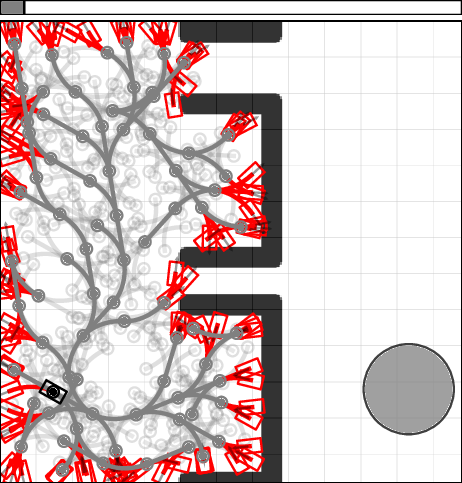
Fig. 2 (a). 1× resolution
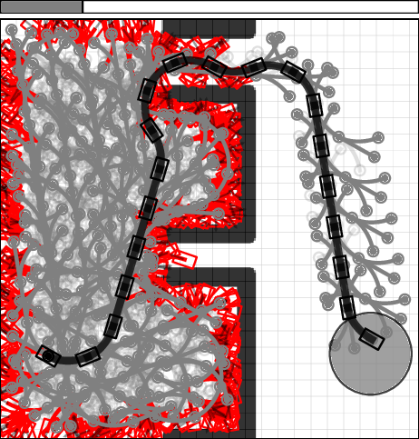
Fig. 2 (b). 2× resolution
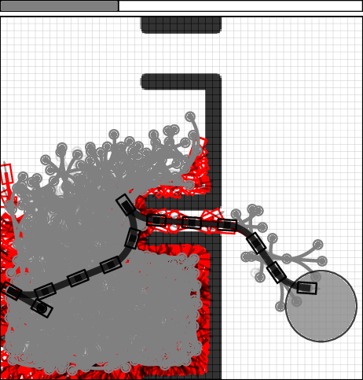
Fig. 2 (c). 4× resolution
To overcome this, we propose Incremental Generalized Hybrid A* (IGHA*), an anytime tree-search framework that dynamically adapts the search resolution on the fly. IGHA* provably matches or outperforms HA*, and has been tested in both simulation and in the real world on a small scale off-road platform (Fig. 3 (a),(b)). Fig. 3 shows a sneak peek of the results we show later.


Incremental Generalized Hybrid A* (IGHA*)
A straightforward extension of HA* is to restart the forward search at successively finer levels of resolution. This can get around the problem of choosing the right grid resolution, but it is not a very efficient way to do so. We call this HA*M, and consider it to be our internal baseline.Incremental Generalized Hybrid A* breaks the rigidity of the interplay between approximate dominance and participation in the search process that exists in HA*. This enables vertices to be reused, resurrected, or injected from earlier searches based on domain knowledge or resolution changes. Within our framework, it is not necessary to always increase the resolution. In our work, we create a simple instance of IGHA* that reduces resolution after detecting that it has escaped a bottleneck, and introduce a hyperparameter (hysteresis) that controls how many confirmations of escaping a bottleneck are needed to trigger the resolution decrease.
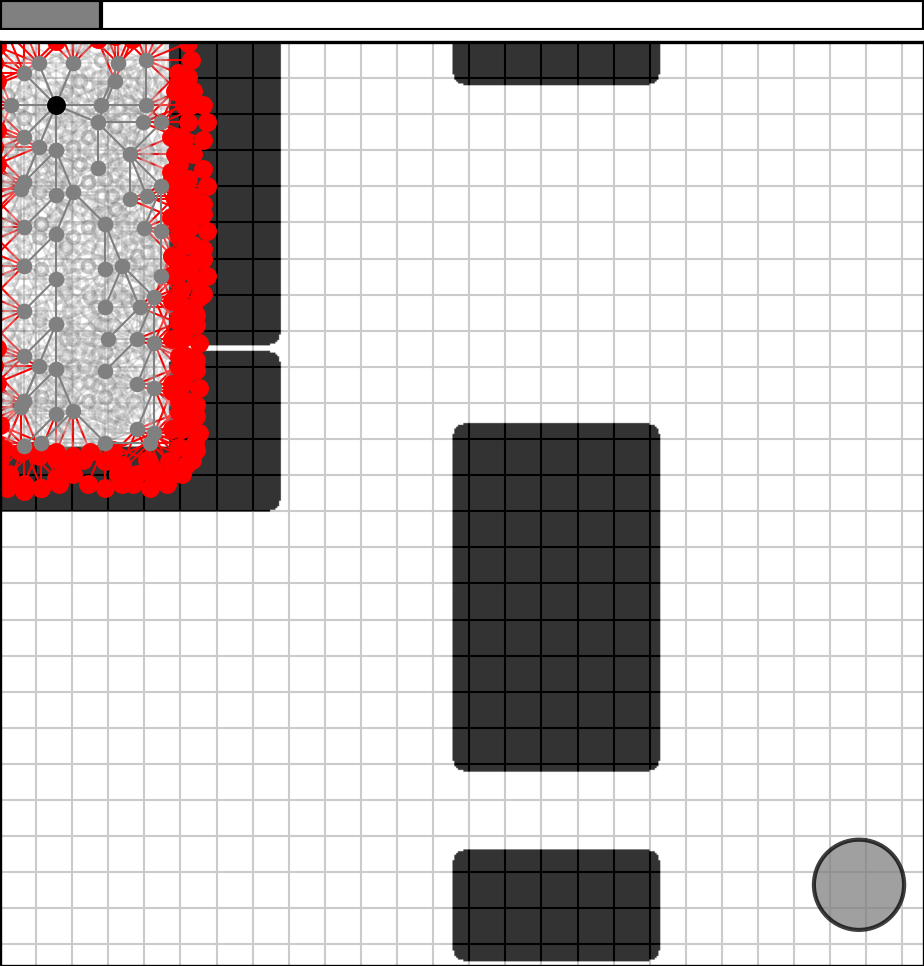
Fig. 5 (a). SB, HA*
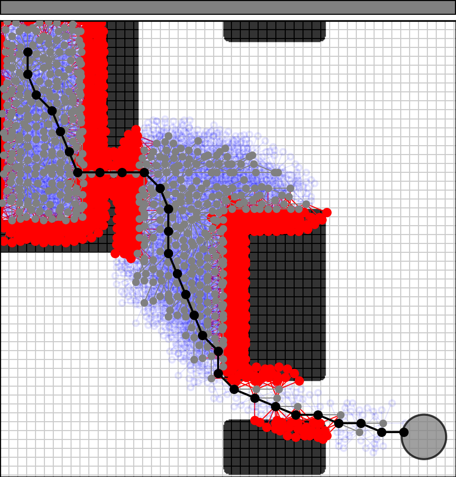
Fig. 5 (b). SB, IGHA*-∞
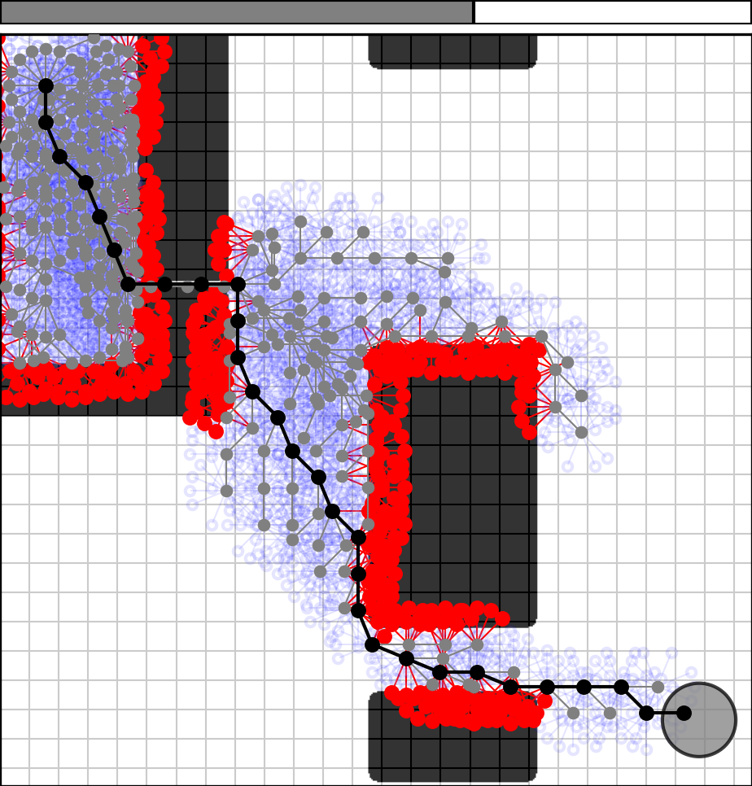
Fig. 5 (c). SB, IGHA*-50
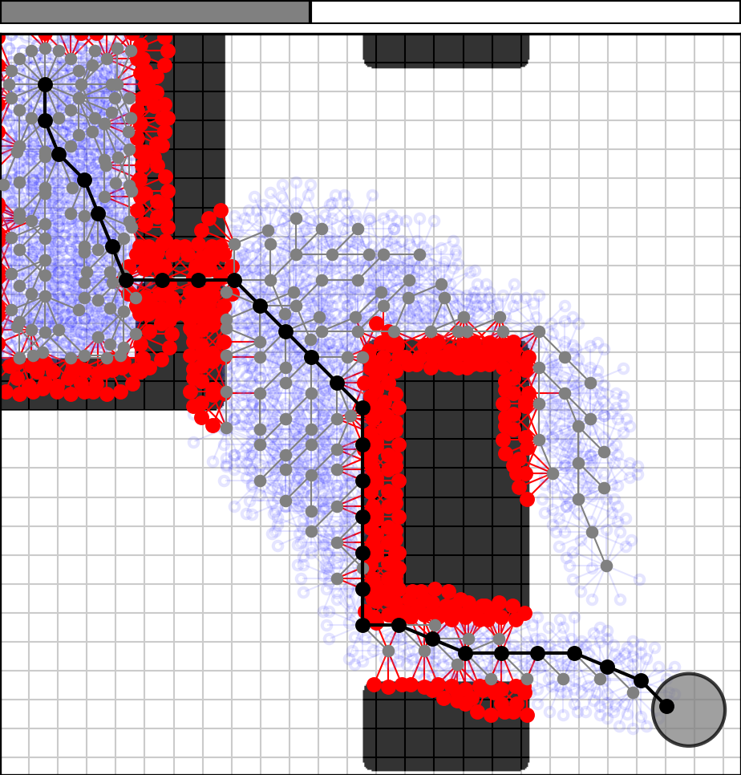
Fig. 5 (d). SB, IGHA*-0
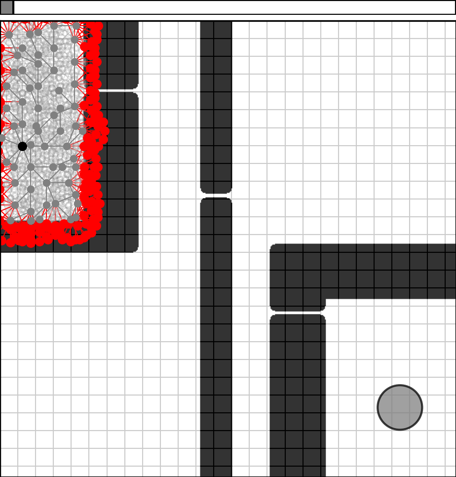
Fig. 5 (e). MB, HA*
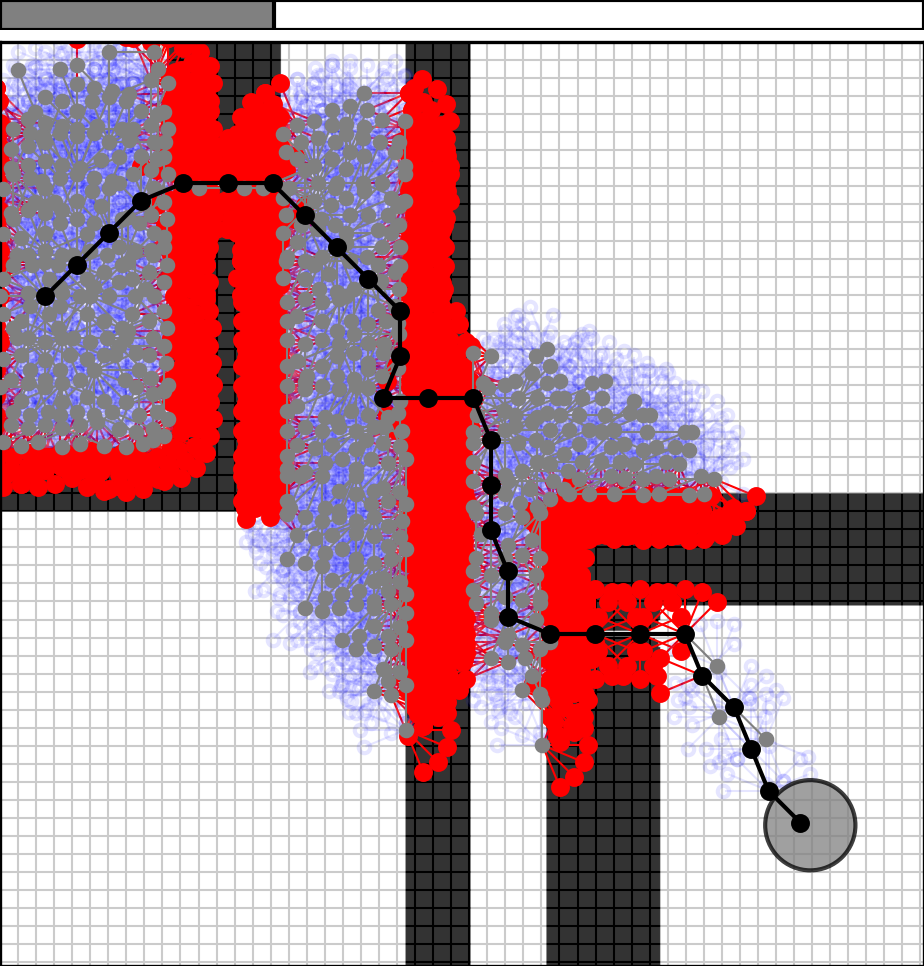
Fig. 5 (f). MB, IGHA*-∞
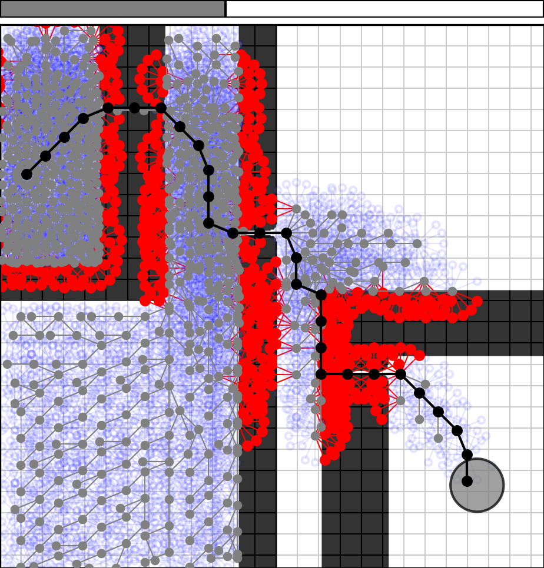
Fig. 5 (g). MB, IGHA*-50
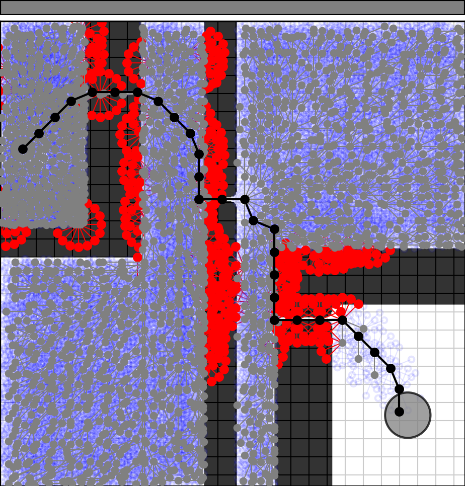
Fig. 5 (h). MB, IGHA*-0
Consider the scenario where the resolution is too low for HA* to find a solution for either the Single-Bottleneck (SB) scenario (Fig. 5 (a-d)), or the Multi-Bottleneck (MB) scenario (Fig. 5 (e-h)). IGHA* variants like IGHA*-∞ (wait for infinite confirmations) only increase resolution and spend more expansions after escaping a bottleneck (Fig. 5 (b)) when a lower resolution could suffice (Fig. 5 (c)) -- which is what IGHA*-0 (wait for 0 confirmations) does (Fig. 5 (d)). However, variants like IGHA*-0 can prematurely switch back in situations where staying at the higher resolution is necessary and spend extra expansions (Fig. 5 (h)) by comparison to IGHA*-∞ (Fig. 5 (f)). In both scenarios, an intermediate value for the hysteresis hyperparameter can provide intermediate behavior; doing better than IGHA*-∞ in SB (Fig. 5 (b)) and better than IGHA*-0 in MB (Fig. 5 (f)).
Zooming out, in contrast to HA*M, since IGHA* can both increase and decrease the resolution, it allows for much faster solutions (Fig. 4 (a),(b)).
Results
How does the hysteresis hyperparameter affect the first-solution performance of IGHA*?
We ablate over the hysteresis hyperparameter using 2D environments (shown in Fig. 5) and show that lower values of the hysteresis hyperparameter generally work better for the Single-Bottleneck scenario (Fig. 6 (a)), and higher values work better for the Multi-Bottleneck scenario (Fig. 6 (b)), with intermediate values providing intermediate behavior. Rank here refers to the percentage of times (darker = higher) a planner achieved a rank for first-path; lower ranks (left) = fewer expansions to find the first solution.
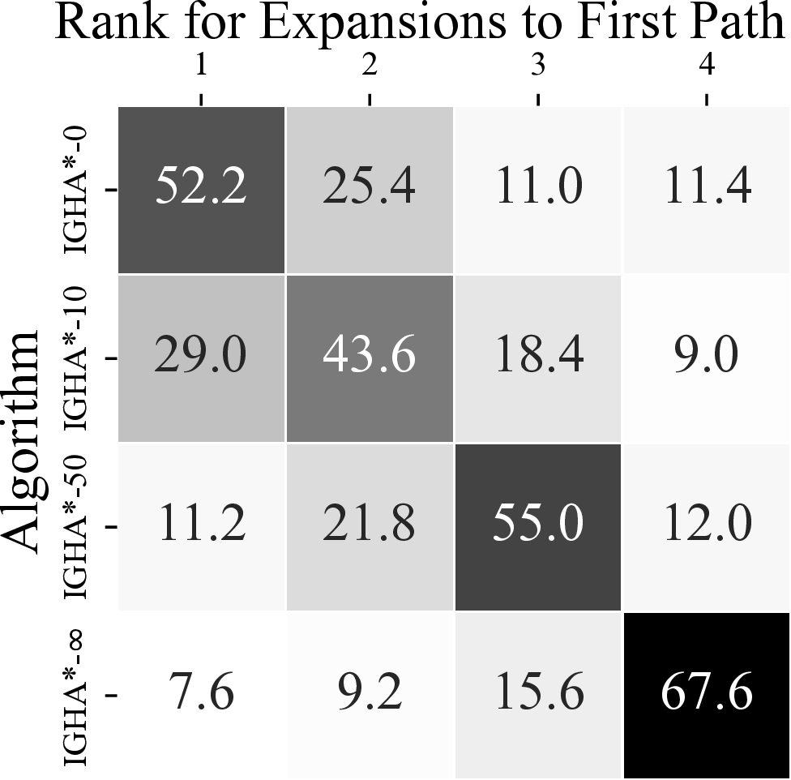
Fig. 6 (a). Rank Plot for Single-Bottleneck Environments
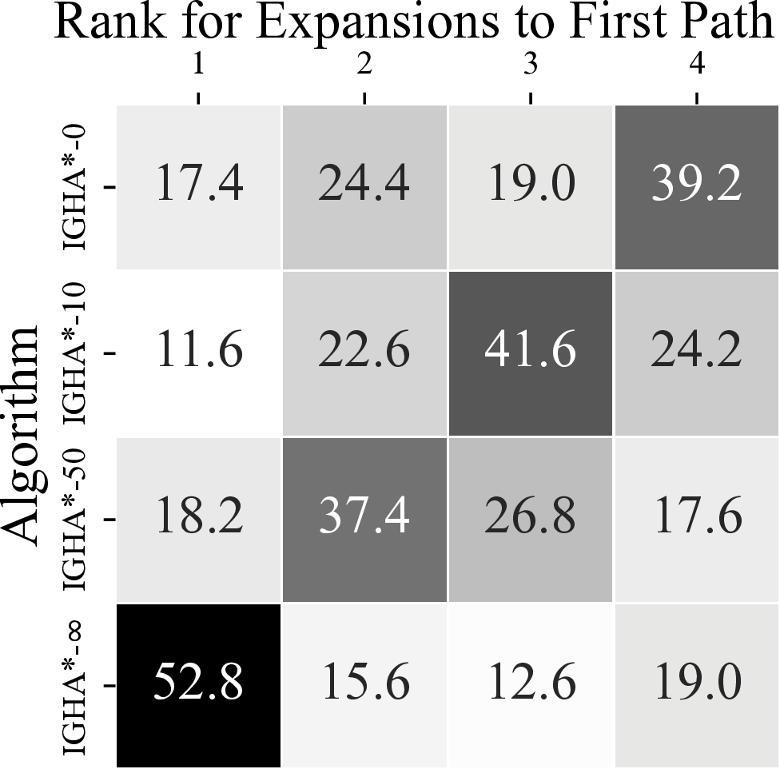
Fig. 6 (b). Rank Plot for Multi-Bottleneck Environments
How does the hysteresis hyperparameter affect the best-solution performance of IGHA*?
In HA*, the resolution parameter affects performance. While IGHA* does not depend on this tuning, in this instance of IGHA*, we introduced a new hyperparameter (hysteresis). So did we just introduce another tuning parameter that also drastically affects overall performance? To show that this is in fact not the case, we ablate over the hysteresis hyperparameter for a 3DoF kinematic car (Fig. 7(a),(b), using maps from MovingAI[5] and BeamNG[6]). Fig. 7(c) shows that regardless of the hysteresis value, we see a significant speed-up compared to HA*M. The solid lines show the speed up in terms of expansions, whereas the dotted lines show the wall-clock speed-up for our C++/CUDA implementation where we take into consideration the time taken to switch between resolutions -- lower hysteresis values switch more often, leading to higher wall-clock penalty.
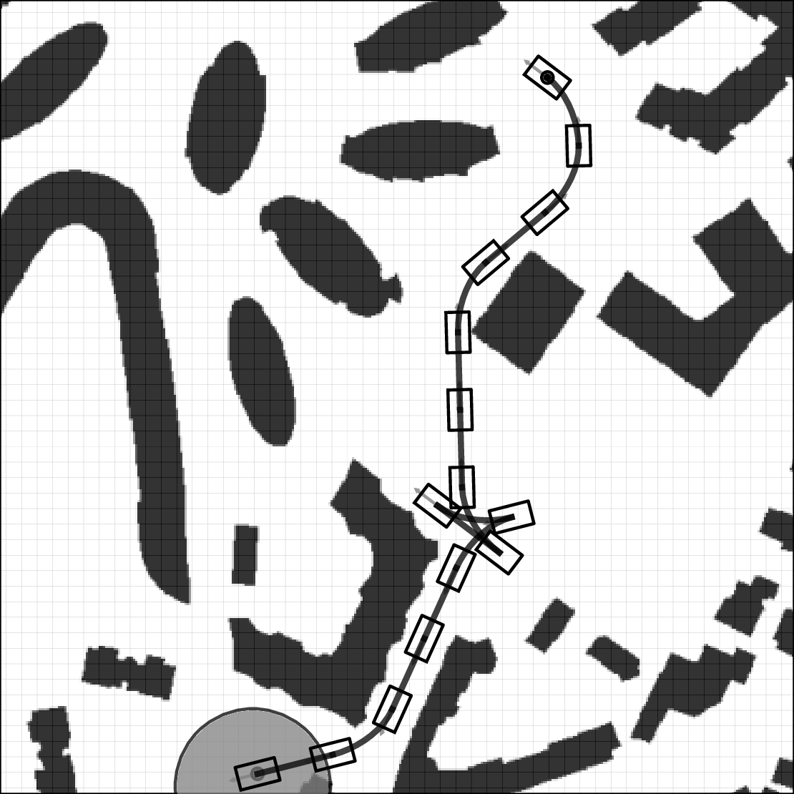
Fig. 7 (a). Urban city environments
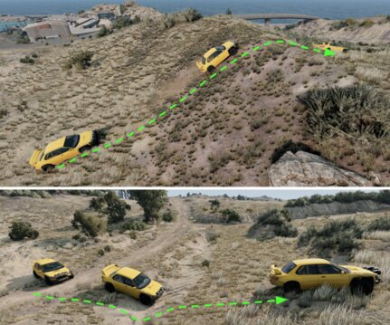
Fig. 7 (b). Off road environments
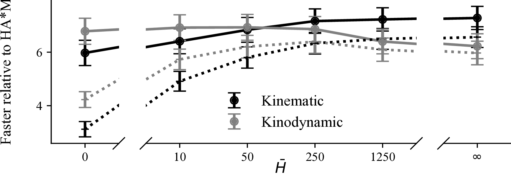
Fig. 7 (c). Speed-up comparison
How does IGHA* perform in practice when compared against state of the art sampling based planners?
Using BeamNG[6] as our simulation environment, we evaluate IGHA* against HA*M, as well as state of the art sampling based planners for kinodynamic planning KPIECE[3] and SST[4]. We use same MPC(MPPI[2]) to track the planned path. As a sanity check for problem difficulty, we run just the MPC with a longer horizon (shown as "MPC" in the legends) -- if the planning was trivial, the MPC would perform similarly to the best planner.
We show that IGHA* outperforms HA*M, as well as the two state of the art sampling based planners, and show an anecdotal video showing the map-view (What the planner sees) for all the methods (Fig. 8 (a),(b)). We also show representative videos for IGHA* vs HA*M in Fig. 8 (c),(d).
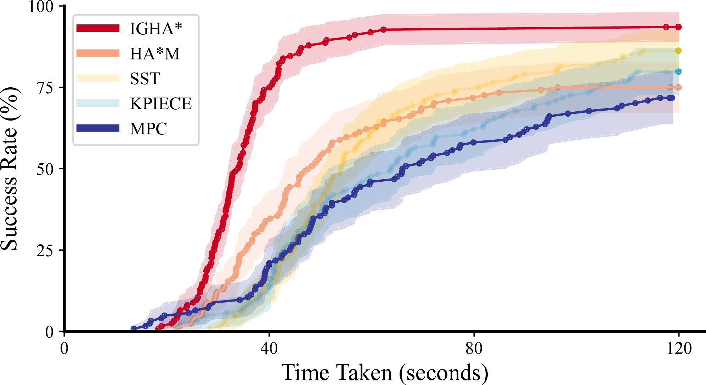
Fig. 8 (a). Success rate vs. time comparison
Real world deployment
We also demonstrate the planner running real-time on an Nvidia Orin Nx (~4 Hz) on the HOUND platform[7] (Fig. 10 (a),(b)). Here, the planner is running in real-time while sharing compute with the perception system and the MPC that run on board the Jetson on the robot, while the robot operates at speeds ~2 m/s in real off-road environments.
References
- D. Dolgov, S. Thrun, M. Montemerlo, and J. Diebel, "Path Planning for Autonomous Vehicles in Unknown Semi-Structured Environments," International Journal of Robotics Research, vol. 29, no. 5, pp. 485-501, 2010.
- G. Williams, A. Aldrich, and E. A. Theodorou, "Model Predictive Path Integral Control: From Theory to Parallel Computation," Journal of Guidance, Control, and Dynamics, vol. 40, no. 2, pp. 344-357, 2017.
- I. A. Sucan and L. E. Kavraki, "A Sampling-Based Tree Planner for Systems with Complex Dynamics," IEEE Transactions on Robotics, vol. 28, no. 1, pp. 116-131, 2011.
- Y. Li, Z. Littlefield, and K. E. Bekris, "Sparse Methods for Efficient Asymptotically Optimal Kinodynamic Planning," in Algorithmic Foundations of Robotics XI: Selected Contributions of the Eleventh International Workshop on the Algorithmic Foundations of Robotics. Springer, 2015, pp. 263-282.
- N. Sturtevant, "Benchmarks for Grid-Based Pathfinding," Transactions on Computational Intelligence and AI in Games, vol. 4, no. 2, pp. 144-148, 2012. [Online]. Available: http://web.cs.du.edu/~sturtevant/papers/benchmarks.pdf
- BeamNG GmbH, "BeamNG.tech," 2022. [Online]. Available: https://www.beamng.tech/
- S. Talia, M. Schmittle, A. Lambert, A. Spitzer, C. Mavrogiannis, and S. S. Srinivasa, "Demonstrating Hound: A Low-cost Research Platform for High-speed Off-road Underactuated Nonholonomic Driving," Robotics: Science and Systems, 2024.